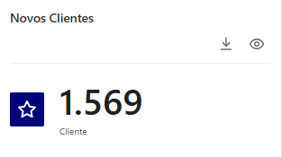
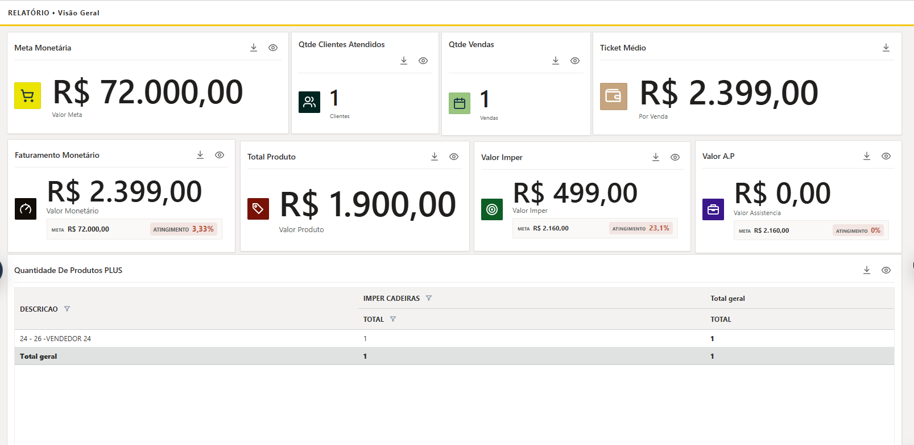
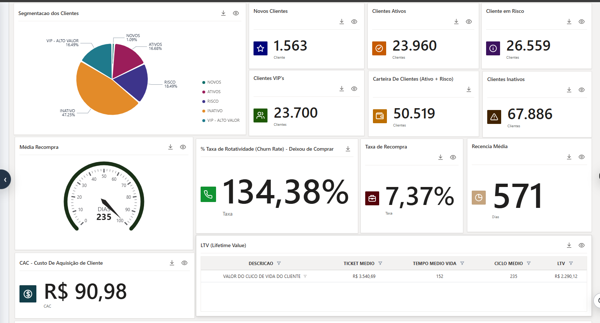
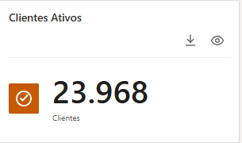
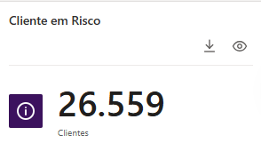
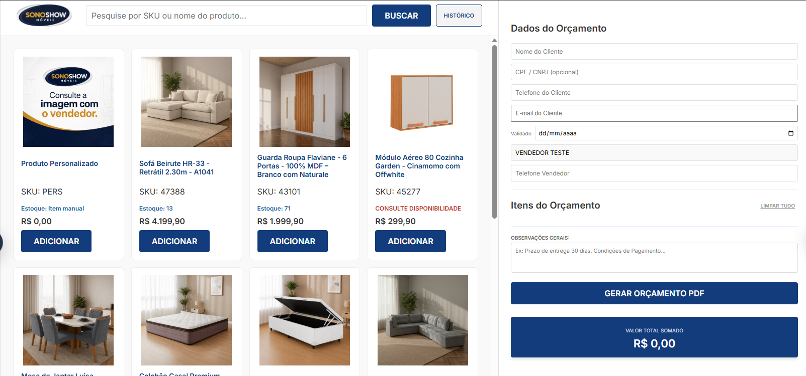
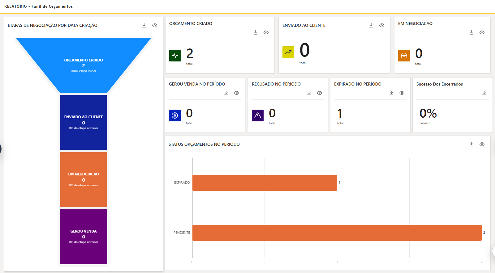
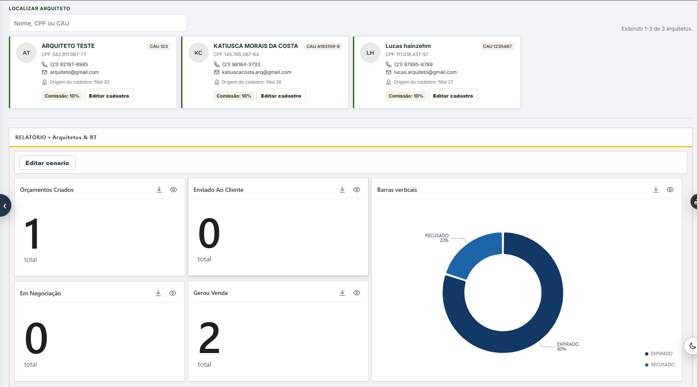

Novos
Clientes cuja primeira compra aconteceu no período atual.
Uma trilha prática para encontrar informações, interpretar os indicadores e acompanhar o relacionamento com seus clientes.
Reúne os principais indicadores de vendas apurados no período selecionado. Use os filtros para mudar o recorte da análise.

A carteira usa a lógica RFM: recência, frequência e valor monetário. Os cards ajudam a escolher a próxima ação.


Clientes cuja primeira compra aconteceu no período atual.

Clientes dentro do ciclo médio de recompra.

Passaram do ciclo médio e precisam de abordagem.
Crie propostas comerciais completas e acompanhe cada oportunidade até a venda.


Acompanhe os orçamentos relacionados a cada arquiteto. Opção não disponível em todos os acessos.
